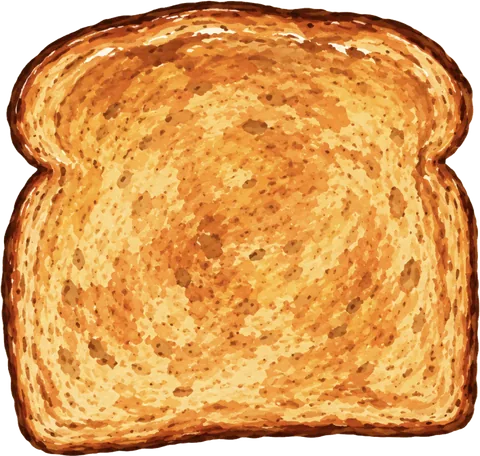
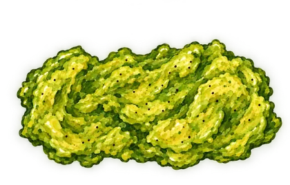
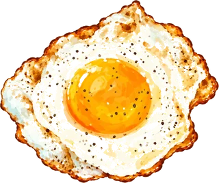

Click through each section below — every one you open adds a topping to the toast.
0/5 toppings added
Drafted from your conclusion section — edit to match your actual write-up, since the uploaded PDF started at Analysis.
Use an indirect measurement of gravitational acceleration
g — timing a dropped object — together
with the relation g = GM/R² to calculate the
mass of the Earth. Hypothesis: our calculated mass would fall
within a factor of 10 of the accepted value,
5.97 × 10²&sup4; kg.
Reconstructed from your analysis — fill in exact heights/trial counts.
- Drop an eraser from a fixed height in the stairwell and time the fall.
- Time the first 15 drops with a stopwatch.
- Switch to slow-motion video for the remaining 5 drops to remove reaction-time error.
- Measure the drop height (a second measurement was borrowed from another group after an issue with the original).
- Separately, time a sunset transition while standing vs. crouching as a supplementary indirect measurement.
- Compute
gfrom the timed drops, then solveg = GM/R²for Earth's massM.
| Method | Avg. fall time (s) | Calculated g (m/s²) | Calculated Earth mass (kg) | % Error |
|---|---|---|---|---|
| All time points (stopwatch + slo-mo) | 0.862 | 13.5 | 1.5 × 10²&sup5; | 151% |
| Slo-mo only | 1.05 | 9.1 | 1.04 × 10²&sup5; | 74.2% |
| Accepted value | — | 9.8 | 5.97 × 10²&sup4; | — |
What went wrong:
- Switching from a stopwatch (first 15 drops) to slow-motion video (last 5 drops) partway through made the combined average less reliable than the slo-mo-only average — reaction time on the stopwatch skewed the combined average to 0.862 s versus 1.05 s for slo-mo alone, pulling the combined-data
gup to 13.5 m/s² against 9.1 m/s² for slo-mo, the latter much closer to the true value. - The sunset-timing measurement had trees and houses partially blocking the view, and only one data point was taken, leaving a lot of room for error.
- The drop height had to be borrowed from another group after a measurement issue with the original, introducing uncertainty about whether both groups measured from the same reference point.
How to fix it:
- Use slow-motion timing for every trial instead of switching methods partway through.
- Take multiple independent height measurements rather than relying on another group's data.
- Collect at least two data points for the sunset timing.
% Error = (Vcalc − Vexp) / Vexp × 100
The results are reasonably accurate: the slo-mo trial (1.04 × 10²&sup5; kg) and combined trial (1.5 × 10²&sup5; kg) come out a factor of 1.7–2.5 off the accepted 5.97 × 10²&sup4; kg. The hypothesis — landing within a factor of 10 of the accepted mass — is confirmed, with room to spare.
Outside sources: stairwell height measurement provided by Liv's group (B-block), after an issue with our own measurement.


